Kruen.
Android and iOS App Design & Development
We create modern and user-friendly applications that combine quality design with perfect functionality.
01 · Flagship App
SwRShortwave Radio
Tune into real shortwave receivers around the world - live, from your phone. SwR connects to hundreds of KiwiSDR and Web-888 receivers and turns the ionosphere into your personal listening room.
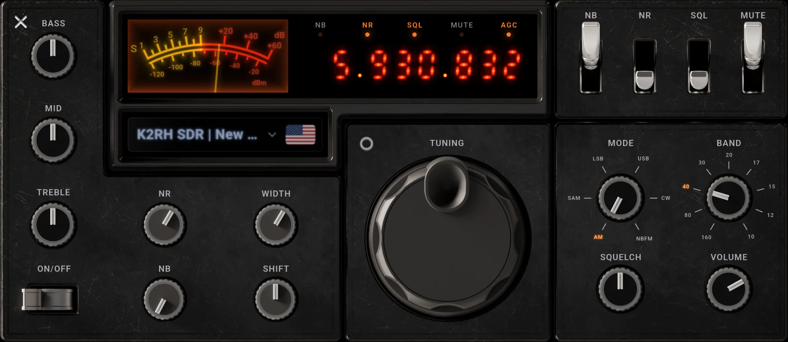
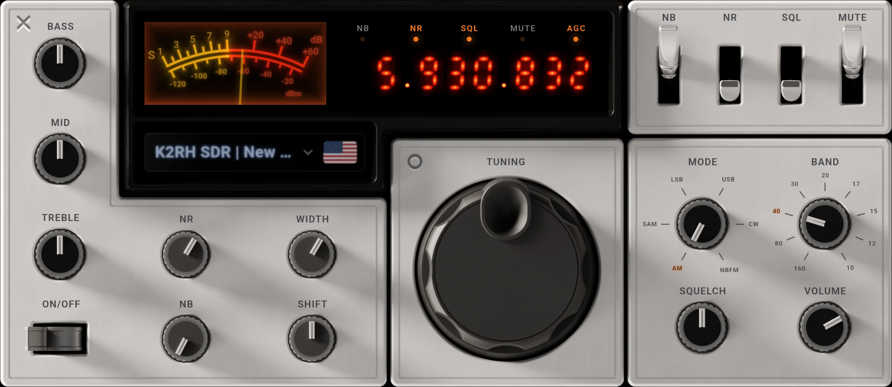
Panel One - one hand-crafted radio skin, two finishes. Drag the divider to switch. Every knob, switch and needle actually works.
Not just a receiver.
A signal instrument.
Live spectrum & waterfall
Watch the whole band breathe in real time. A glowing frequency display, an authentic S-meter and a full waterfall view make hunting for signals feel like the real thing.
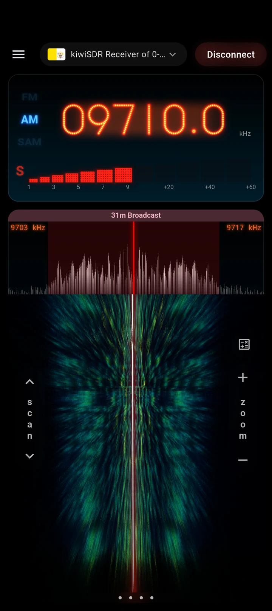
Different types of waterfalls & spectrums
Switch the waterfall into a rolling 3D landscape or a hypnotic 4D warp. Radio spectrum has never looked this good on a phone.
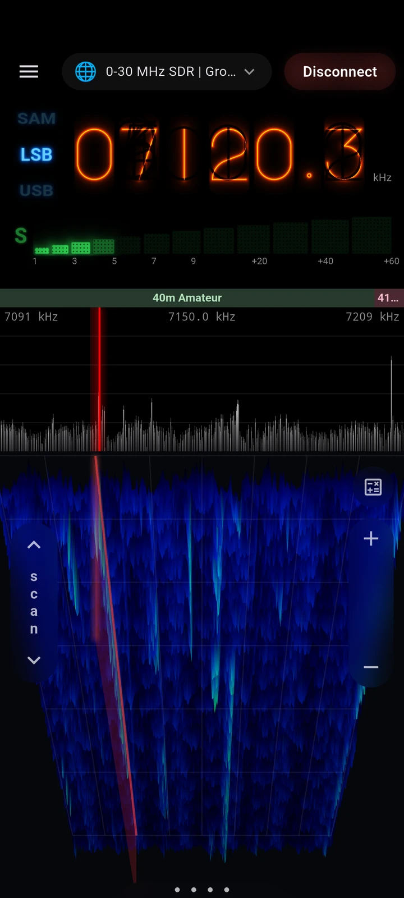
A worldwide receiver network
Find your receiver anywhere in the world and choose from 5 clients: KiwiSDR/Web-888, OpenWebRX, UberSDR, FM-DX and AirSpy. Watch where the sun is shining and where it's already night.
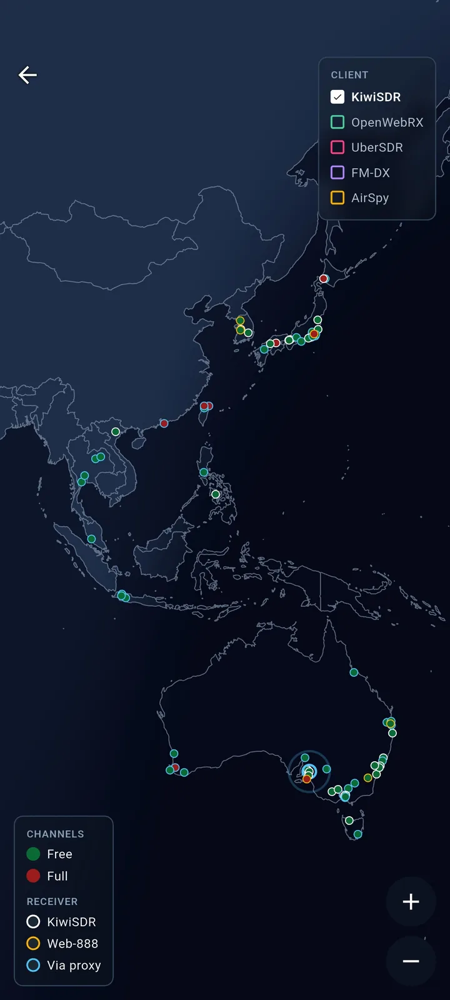
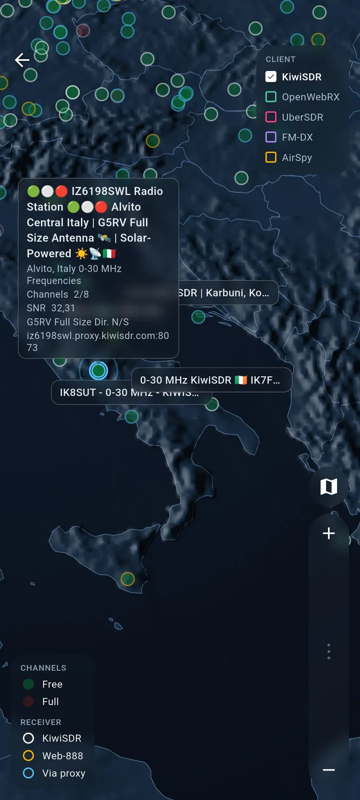
Shape the sound
A built-in equalizer, adjustable bandwidth, noise reduction and smart scanning. Fine-tune every station until it sounds exactly right.
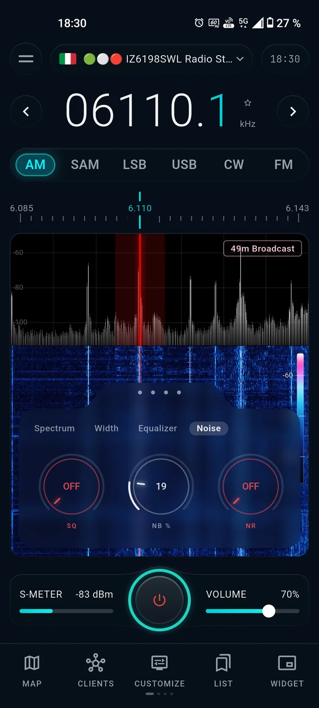
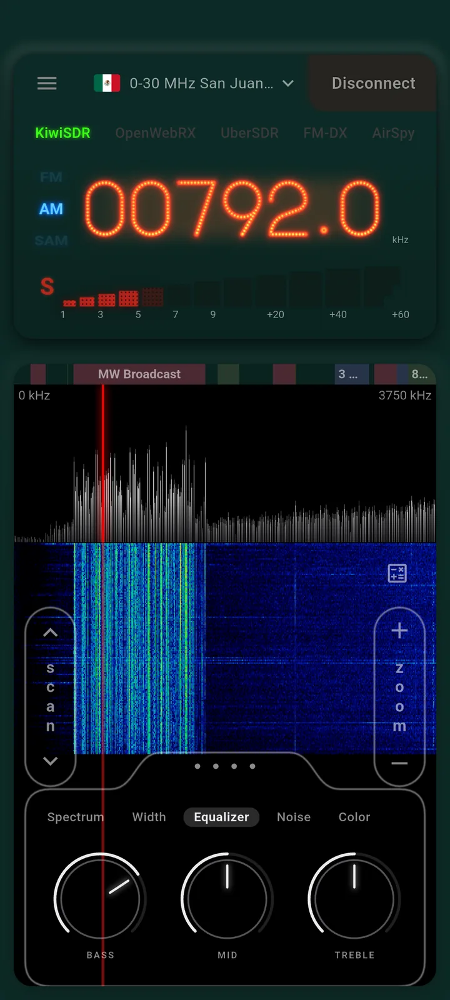
Pixel mode
A retro monochrome skin that turns the whole receiver into a blocky pixel display. Frequency, spectrum and waterfall - reimagined as glowing dot-matrix art.
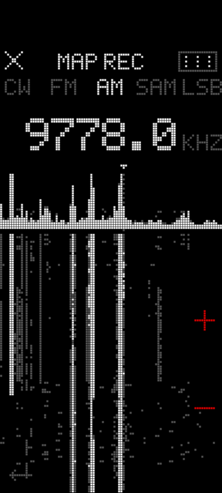
FM-DX
FM broadcast radio, right on your phone (87.5-108 MHz). Tuning by hand is fast and lands right on frequency, so drag the dial to hunt for stations.
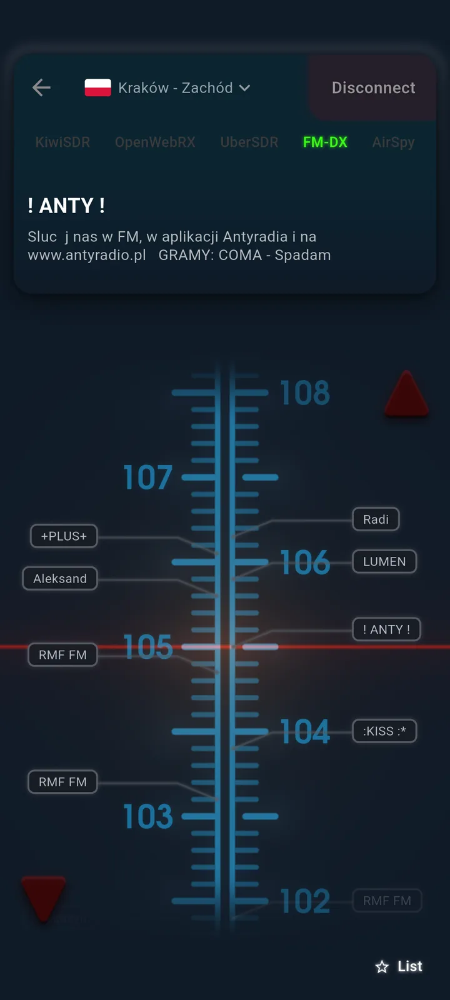
Widgets
Two types for KiwiSDR and FM-DX. Browse the web or do anything else on your phone while the radio keeps playing - and retune any time straight from the widget.
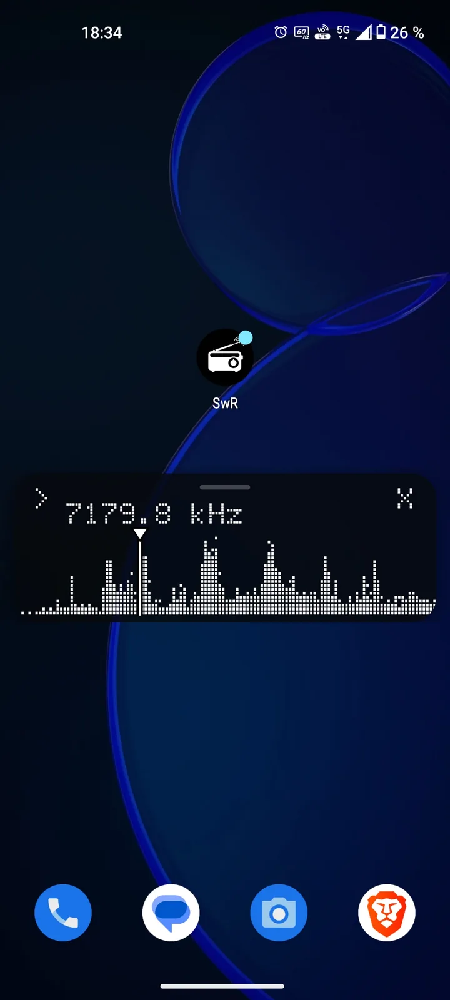
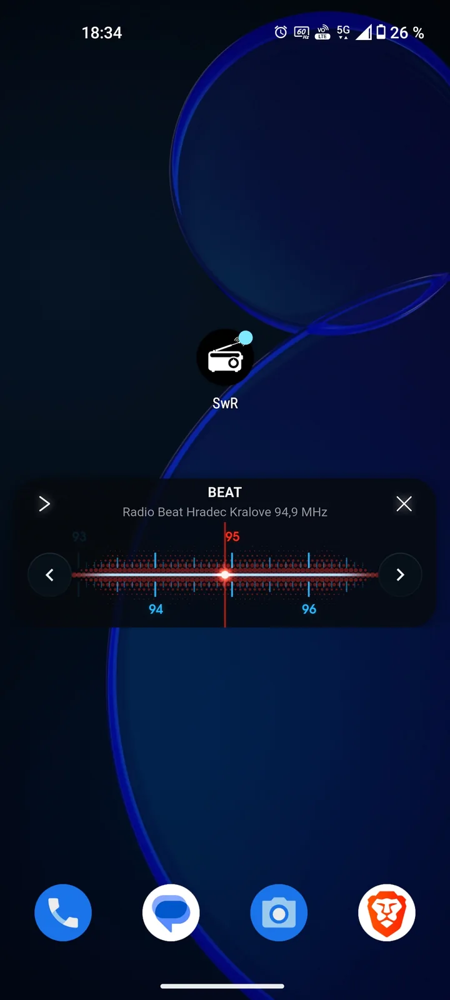
Your own USB dongle
Plug in an SDR dongle and listen completely offline - no internet, no server, no limits. Just your antenna and the whole band.
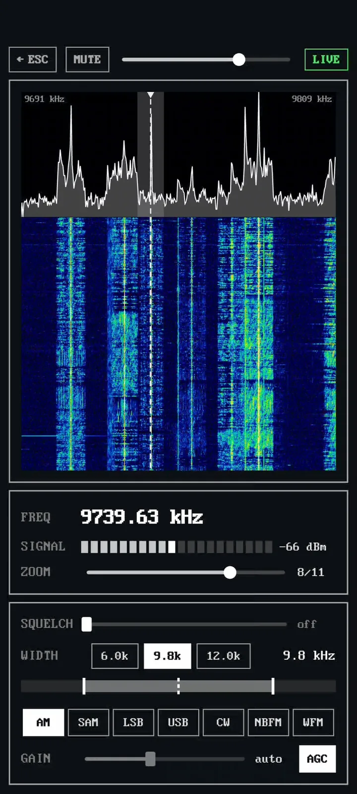
Free version
Enjoy listening to stations around the world completely free and without ads.
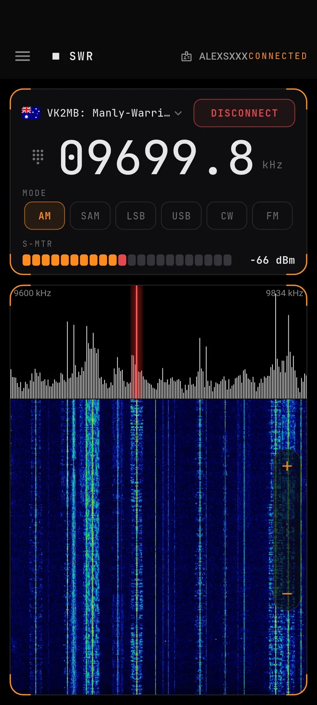
Free or PRO.
| Feature | Free | PRO |
|---|---|---|
| Receiver clientsKiwiSDR/Web-888, OpenWebRX, UberSDR, FM-DX, AirSpy | 1KiwiSDR/Web-888 | 5all clients |
| Listening timeHow long you can stay tuned in | 15 min | Unlimited |
| No ads | Included | Included |
| Zero data collection | Included | Included |
| Render RadioHand-crafted skins with working knobs and needles | Not included | Included |
| Pixel graphicsRetro dot-matrix display mode | Not included | Included |
| Waterfall visuals | 1 | 4 |
| Spectrum visuals | 1 | 4 |
| Widgets for KiwiSDR/Web-888 | Not included | Included |
| Widgets for FM-DX | Not included | Included |
| Background playback | Not included | Included |
| Smart scanning | Not included | Included |
| Reception & sound tuningEqualizer, bandwidth, noise reduction | Not included | Included |
| Custom colours | Not included | Included |
| Smart receiver detectionFinds the receiver's location and the band it is tuned to | Included | Included |
| Day / night map | Not included | Included |
| USB dongleYour own antenna, fully offline | Not included | Included |
One purchase unlocks everything - now and in the future. Pay once and PRO stays yours. Every new client, visual and feature we add later is included - no subscription, no ads, no extra payments.
Upcoming
02 · Also by Kruen
AmWAllMarkets Widget
Stocks, crypto, forex and commodities - as clean, glanceable home-screen widgets. One look at your home screen and you know where the market stands.
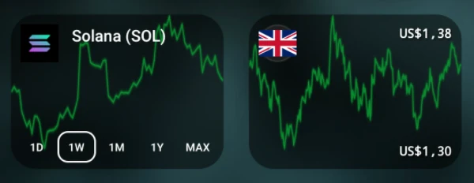
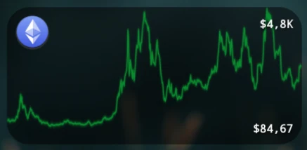
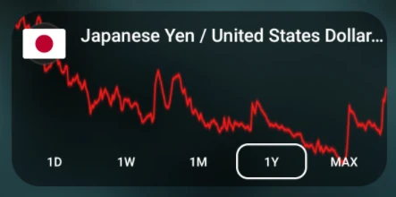
Made in the Czech Republic 🇨🇿
Kruen is a small studio based in the Czech Republic. We bring European quality and precision to mobile app development - traditional engineering craft combined with modern technology.
Our commitment to clean, ethical development means no ads, no hidden fees, no additional payments. And above all: we do not collect any user data. No tracking, no analytics, no data harvesting. What you do with our apps stays with you.
- Security-first development
- Privacy-by-design architecture
- Ad-free user experience
- Zero data collection